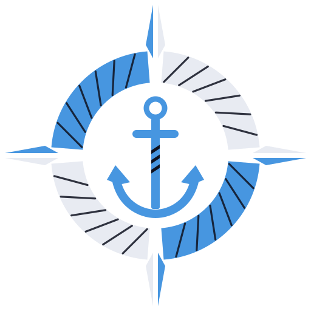
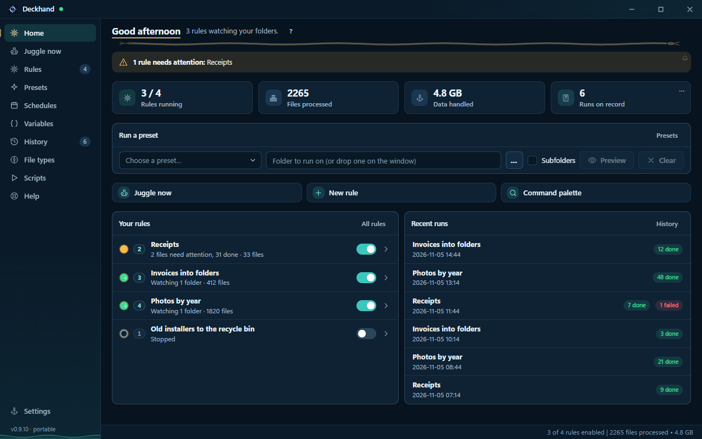

Choose what matches
Use file names, types, dates, metadata, or contents to pick the files a rule should handle.

DeckhandFILE ORGANISER FOR WINDOWS
Give Deckhand a folder and a rule. Preview how your files will move, then run it once or let Deckhand watch for new arrivals.
Windows 10 or 11 · 64-bit · Free beta

Use file names, types, dates, metadata, or contents to pick the files a rule should handle.
Move, copy, rename, sort, zip, or extract files. Preview the plan before a manual run.
Run a preset on a folder, watch for new files, or set a schedule. Review results and undo supported actions in History.
Screenshots show sample data. Select one to enlarge it.
On a ship, the deckhand is the crew member who does the actual handling: moving cargo, stowing gear and keeping the deck in order so the vessel runs. Your PC is the ship, your files are the cargo, and Deckhand is the crew member that sorts, moves, names and tidies it, the same way every time, while you steer.